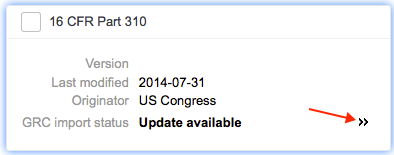

UCF Authority Documents
| |
Note: This article applies to Fuji and earlier releases. For more current information, see UFC Authority Document Import Process - Legacy at http://docs.servicenow.com
The ServiceNow Wiki is no longer being updated. Visit http://docs.servicenow.com for the latest product documentation. |
1 Overview
The ServiceNow GRC application can download Unified Compliance Framework (UCF) authority documents and transform selected data into ServiceNow GRC tables through an approval process. Administrators can filter the downloaded content, select the documents to use, and import only the content they want into tables for authority documents, citations, and controls. When UCF publishes quarterly updates, GRC determines which data in your system needs to be updated and displays side-by-side comparisons of the changes to make the process easier. You can import UCF authority document into GRC tables starting with the Fuji release.
2 UCF Import Process
To download UCF documents and import specific content into the GRC tables for the first time, follow these procedures:
- Download the UCF documents, using the controls in the UCF Authority Documents screen.
- Select the documents you want to use for your authority documents, citations, and controls and request an import into GRC.
- Approve the request to import the content into the GRC tables.
| |
Warning: All data imported from UCF Authority Documents is read-only and must be protected. Do not customize the controls on any UCF fields transformed into GRC tables. |
2.1 UCF Import Properties
The preconfigured values in the UCF import properties define the connection specifics for the UCF source documents and should not be changed. To view UCF properties, navigate to GRC > Administration > Properties.
| Property Label | Name | Description |
|---|---|---|
| URL of UCF website | com.snc.governance.ucf.url | Address of the UCF website. The file path to the UCF XML file is appended to this URL. The default provided by ServiceNow is http://www.unifiedcompliance.com. |
| User of UCF website account | com.snc.governance.ucf.username | User name for the UCF account that has access to the downloaded files. By default, the value in this property is blank. ServiceNow provides a UCF account user that is coded into the system. If you have your own UCF account, enter the user name to override the one provided by ServiceNow. |
| Password of UCF website account | com.snc.governance.ucf.password | Password for the UCF account that has access to the download files. By default, the value in this property is blank. ServiceNow provides a UCF account password for its configured user. If you have your own UCF account, enter the password in this property to override the one provided by ServiceNow. |
| File path relative to UCF URL | com.snc.governance.ucf.filepath | Path to the specified download file on the UCF server. This path is provided by ServiceNow and is appended to the address for the UCF website and names the authoritative document to download. This path downloads the latest version of the UCF XML file and does not need to be changed. |
2.2 Downloading the UCF File
To download the UCF file for the first time:
- Navigate to GRC > Administration > Import UCF Content.
- An empty UCF Authority Documents window appears.
- Click Check UCF Status.
- Click Start.
- The status window shows the name and version of the file and the progress of the download. For more information, see UCF Download Background Processes.
- Note: If the internet connection is lost for any reason, a message appears in the bottom of the download screen advising you of this exception. The system attempts to reconnect to the UCF download site, and removes the message when communication is restored.
- When the download has completed successfully, click Done to view the UCF authority documents.
2.2.1 UCF Download Background Processes
The download process performs the following steps automatically to prepare the UCF data for selection as GRC authoritative content.
- Downloads and unpacks the UCF ZIP archive.
- Loads the unpacked files into temporary staging tables.
- Compares downloaded UCF files to any previous GRC updates.
- Creates staging tables used for calculations only.
The ServiceNow system creates these staging tables to hold UCF data:
Staging Table Target Table Description GRC UCF Authority Document [grc_ucf_authority_document] Authority Document [grc_authoritative_source] Stores authority documents in GRC. GRC UCF Citation Mapping [grc_ucf_citation_mapping] Citation [grc_authoritative_src_content] Stores citation data in GRC. GRC UCF Control [grc_ucf_control] Control [grc_control] Stores controls in GRC. GRC UCF Update Status [grc_ucf_update_status] No mapped table in GRC. Stores the current progress of a UCF update. The instance uses this data to display the correct status of an import to one or more logged-in users and to prevent interruption of the import process. GRC UCF Filter [grc_ucf_filter] No mapped table in GRC Stores the number of documents in each UCF group. These are the values displayed for each group in the filter screen.
2.2.2 UCF Download Status
To view details of the download as summarized on the download progress screen, navigate to GRC > Administration > UCF Download Status. These are the details of the UCF download stored in the UCF Download Status [grc_ucf_download_status] table.
2.3 Selecting Content to Import
In this task, you select the documents from the UCF download that you want to import into the GRC tables. Your selections then go through an approval process before the system moves the documents into GRC tables.
- Navigate to GRC > Administration > Import UCF Content.
- The UCF Authority Documents screen appears, showing all the downloaded documents as cards in the left column.
- To view the details of a document, click anywhere in the card.
- The selected card is outlined in blue. A document counter at the top of the left column indicates the number of document cards displayed and also functions as a reset button for the filter and search box. The citations and controls associated with the selected document card appear in the detail pane on the right. The current version of the UCF document appears in the Released Version field and is expressed as Qx YY - Final, where Q is the current quarter, and YY is the current year.
- Type a string in the search box to filter the cards by values in the documents' headers. You can search on these UCF fields:
- GRC Update Status
- Category
- Type
- Authority Originator
- Impact Zones
- To clear the search field, click the counter at the top of the left column.
- Click the arrow in the search field to display the authority document filter.
- In the filter that appears, click a group heading to expand the section.
- Each group is a field from the document header. The numbers in parentheses show the count of UCF documents in each group.
- To filter the list by document status, select an option from the GRC Update Status section.
- This list displays these document states:
- Up to date: Documents you have imported that are currently up to date in your system.
- Not imported: Available documents that you have not imported yet.
- Update available: Documents you have imported for which updates are available.
- To filter the list by documents in similar categories, click a value in one or more of the groups provided.
- Click one or more field values to filter the list and display the matching document cards in the left column.
- The system applies the following operators to multiple filters:
- Filters within the same group or between groups have an OR relationship.
- Filters in the authority document filter have an AND relationship with a string in the search box.
- The system applies the following operators to multiple filters:
- Click Reset to clear the selections in the authority document filter, or click the counter above the left column.
- Select the check boxes in the cards for the documents you want to import into GRC.
- A counter in the Update GRC button shows the number of cards currently selected.

- Click Update GRC.
- The system displays an import dialog box that lists the requested documents and advises you if approvals are required for this request. The dialog box indicates if a selected document contains super controls. A super control is any control shared by two or more authority documents. When you import a document with super controls, GRC updates those controls for all authority documents that use them.
- Click Submit to initiate the approval process.
- When the request is submitted, the dialog box lists the approval status of each document you have selected. If a document was previously requested but has not yet been approved, GRC marks it Awaiting approval.
- Click Close.

{kind=link}
{kind=link}
{kind=link}
{kind=link}
{kind=link}
{kind=link}
{kind=link}
{kind=link}
{kind=link}
2.4 Approving UCF Document Requests
By default, UCF authority documents selected for import or update require approval before GRC can move the data into the appropriate tables. When an administrator submits a UCF document request, the system sends email notifications to all members of the GRC Approvers group and creates an approval task. Only one member of the group is required to approve or reject a UCF request. The GRC Approvers group contains members with the grc_admin or grc_executive_approver role.
When a request is approved, the system updates GRC appropriately. Depending on the size of the UCF document, this process can take several minutes. The system notifies the requestor by email when the update is complete, and the data is ready for use. If the update request is rejected, the system sends the notification immediately.
A system property determines whether or not an approval is required for UCF imports. Navigate to GRC > Administration > Properties and locate the property named Automatically approve all GRC update requests. By default, this property is set to require approvals. To make approvals automatic for all requested UCF imports, select the Yes check box.
| |
Note: The download process overwrites all UCF documents in the staging tables, including those awaiting approval. For this reason, the system prevents you from downloading new versions of UCF authority documents either manually or automatically if you have pending approval requests for GRC updates. To proceed, you must approve or reject all pending requests before the system can download new authority documents. |
- Navigate to Self-Service > My Approvals.
- The list contains approval requests in any state that are assigned to your group.
- To approve or reject multiple requests, edit the State column in the list.
- To process a single UCF update requests, open the record and review the details.
- Click Approve or Reject.
- When you approve a request, the approval workflow sends an email to the requestor describing the action taken on the request. By default, all approved UCF control documents are imported into GRC in an active state, ready for use. Depending on the size of the documents selected, the import process can take several minutes. The system moves the selected data from the UCF tables to the appropriate GRC tables as shown here.
{kind=link}
{kind=link}
UCF Table GRC Table UCF Authority Document [ucf_authority_document] Authoritative Source [grc_authoritative_source] UCF Citation Mapping [ucf_citation_mapping] Authoritative Source Content [grc_authoritative_src_content] UCF Control [ucf_control] Control [grc_control]
3 Updating GRC Documents
You can update the UCF documents you use in GRC manually or configure the system to do it automatically whenever a new UCF version is available. By default, GRC downloads the most recent version of the UCF authority documents, which are updated quarterly. The ServiceNow system places these files in staging tables until they are imported into GRC. When you import a new document version, these entities are updated:
- Authority documents
- Citations
- Controls
3.1 Version Control
GRC only creates new versions of authority documents, citations, and controls if those entities have changed in downloaded UCF documents. By default, the system ignores changes to the last modified date of a UCF document when creating a new version. To allow GRC to create new versions of documents whose dates have changed, navigate to GRC > Administration > Properties and clear the check box for the Ignore changes to UCF modified date property.
GRC observes these general rules when importing updated documents from UCF:
- If UCF authority documents or citations are updated, both entities are imported into GRC and versioned.
- If only the UCF controls are updated, then only the controls are versioned. In this case, a new link is created between the updated control and the existing citation that uses it.
- Older versions of updated controls are automatically deactivated and do not appear in lists of controls.
The control test definitions, policies, and risks that use these updated entities are reset to use the latest version. Any control test instances tied to a control from the previous version remain linked to that control. You must generate new control test instances based on the latest UCF version. The system deactivates all previous versions of an imported UCF document and retains them in their respective GRC tables.
{kind=link}
Changes to these UCF authority document fields trigger versioning in GRC.
| UCF Field | GRC Field | |
|---|---|---|
| Authority Documents | ||
| ucf_ad_common_name | name | |
| ucf_ad_id | source_id | |
| ucf_ad_version | source_version | |
| ucf_ad_date_modified | source_last_modified | |
| ucf_ad_release_version | source_release_version | |
| ucf_ad_url | url | |
| Citations | ||
| ucf_citation | reference | |
| ucf_citation_guidance | key_areas | |
| ucf_citation_id | source_id | |
| ucf_citation_date_modified | source_last_modified | |
| ucf_citation_release_version | source_release_version | |
| Controls | ||
| ucf_ce_control_title | name | |
| ucf_ce_control_statement | description | |
| ucf_ce_id | source_id | |
| ucf_ce_date_modified | source_last_modified | |
| ucf_ce_release_version | source_release_version | |
3.2 Manually Updating UCF Documents
By default, GRC is configured to require manual update of the UCF documents it uses. Resolve any pending approval requests for GRC updates before attempting to download new UCF documents. The system blocks the download until all requests are either approved or rejected.
- Navigate to GRC > Administration > Import UCF Content.
- The UCF Authority Documents screen displays the current documents.
- Click Check UCF Status.
- To download a new version, click Start.
- If you have pending approval requests for GRC updates, the system blocks the download.
- Resolve any pending requests before proceeding.
- The download screen tracks the progress of the update. GRC downloads the latest UCF archive and unpacks it. The system then deletes the contents of the staging tables and reloads them with the latest data. There is no versioning used in these tables. During this operation, the system compares the incoming data with the current data in GRC to determine if anything has changed. When the update is finished, the download screen shows the results of the comparison.
- Note: If the internet connection is lost for any reason, a message appears in the bottom of the download screen advising you of this exception. The system attempts to reconnect to the UCF download site and removes the message when communication is restored.
- Look at the value in the GRC Import Status field in the cards for the documents you use to see if updates are available.
- Possible status values are:
- Up to date: Documents you have imported that are currently up to date in your system. There is no update available from UCF in the latest version. The check box for up to date items is disabled.
- Not updated: Available documents that you have not imported into GRC.
- Update available: Documents you have imported previously for which updates are available.
- If the system indicates that an update is available, click the arrows on the card to view the difference between your current GRC data and the latest UCF version of that data.
- 
- A window appears, showing specific differences between the two versions. These conditions can occur if:
- The UCF column is empty, but the GRC column contains an entry. In this case, the entity is no longer provided by UCF. The ServiceNow system responds by deactivating the entity in GRC, making it unavailable for any control test definitions that previously used it.
- The GRC column is empty, and the UCF column contains an entry. In this case, the download file contains a new entity that is added to GRC during the update.
- Both the UCF column and the GRC column contain entries. In this case, the entity must be updated from UCF to GRC.
- To update a new version of a document, select the check box on the card and click Import into GRC.
- If approval is required, the system sends your request to users with the grc_executive_approver role, who can either approve or deny the request. The system moves approved content to the appropriate GRC tables. If earlier versions of the document exist in the database, GRC increments the Version field on the new record and attaches it to the control test definitions, policies, and risks that use it.
- View all previous versions of a source in the Other versions related list for records in the following tables:
- Authoritative Source [grc_authoritative_source]
- Authoritative Source Content [grc_authoritative_src_content]
- Control [src_control]
{kind=link}
{kind=link}
{kind=link}
{kind=link}
3.3 Configuring Automatic UCF Downloads
When the Governance, Risk, and Compliance plugin is activated, the system creates a scheduled job called Notify GRC Admin new UCF is available. By default, this job is configured to check for new UCF authority documents each Monday. To allow this job to run and download UCF updates automatically, navigate to GRC > Administration > Properties and set Enable automatic download to Yes. Automatic downloads cannot run if you have pending approval requests for GRC updates. You must approve or reject all pending requests before the system can download updated UCF documents.
When updates are downloaded, an event called grc.update sends an email notification to users with the grc_admin role, advising them of the action. The administrator then reviews the changes before requesting updates to GRC. If the system is configured to require approval, all import requests are reviewed by users with the grc_executive_approver role, who can approve or reject the requested changes.